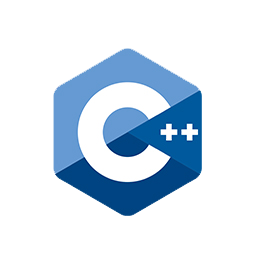
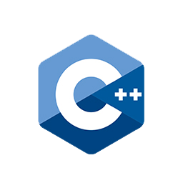

Experience
Delivery Circle: Software Engineer
PHP, Laravel, MySql, HTML, Bootstrap, Javascript, PHPUnit, LaravelDusk
- Implemented Google Secret Manager with the platform
- Implemented/Maintained multiple user and business type status filters
- Worked with excel/csv files and enabling users to download data about their users, businesses and accounts.
- Wrote PHPUnit and Laravel Dusk tests to test different features on the platform.

 
